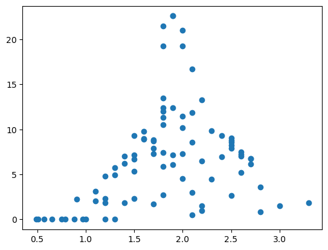

Pandas!#
!pip install pandas seaborn
Lese fil og undersøke innholdet#
import pandas as pd
df = pd.read_csv("https://www.uio.no/studier/emner/matnat/ifi/IN-KJM1900/h21/datafiler/periodesystemet.csv")
df.head()
| AtomicNumber | Element | Symbol | AtomicMass | NumberofNeutrons | NumberofProtons | NumberofElectrons | Period | Group | Phase | ... | FirstIonization | Density | MeltingPoint | BoilingPoint | NumberOfIsotopes | Discoverer | Year | SpecificHeat | NumberofShells | NumberofValence | |
|---|---|---|---|---|---|---|---|---|---|---|---|---|---|---|---|---|---|---|---|---|---|
| 0 | 1 | Hydrogen | H | 1.007 | 0 | 1 | 1 | 1 | 1.0 | gas | ... | 13.5984 | 0.000090 | 14.175 | 20.28 | 3.0 | Cavendish | 1766.0 | 14.304 | 1 | 1.0 |
| 1 | 2 | Helium | He | 4.002 | 2 | 2 | 2 | 1 | 18.0 | gas | ... | 24.5874 | 0.000179 | NaN | 4.22 | 5.0 | Janssen | 1868.0 | 5.193 | 1 | NaN |
| 2 | 3 | Lithium | Li | 6.941 | 4 | 3 | 3 | 2 | 1.0 | solid | ... | 5.3917 | 0.534000 | 453.850 | 1615.00 | 5.0 | Arfvedson | 1817.0 | 3.582 | 2 | 1.0 |
| 3 | 4 | Beryllium | Be | 9.012 | 5 | 4 | 4 | 2 | 2.0 | solid | ... | 9.3227 | 1.850000 | 1560.150 | 2742.00 | 6.0 | Vaulquelin | 1798.0 | 1.825 | 2 | 2.0 |
| 4 | 5 | Boron | B | 10.811 | 6 | 5 | 5 | 2 | 13.0 | solid | ... | 8.2980 | 2.340000 | 2573.150 | 4200.00 | 6.0 | Gay-Lussac | 1808.0 | 1.026 | 2 | 3.0 |
5 rows × 28 columns
df.columns
Index(['AtomicNumber', 'Element', 'Symbol', 'AtomicMass', 'NumberofNeutrons',
'NumberofProtons', 'NumberofElectrons', 'Period', 'Group', 'Phase',
'Radioactive', 'Natural', 'Metal', 'Nonmetal', 'Metalloid', 'Type',
'AtomicRadius', 'Electronegativity', 'FirstIonization', 'Density',
'MeltingPoint', 'BoilingPoint', 'NumberOfIsotopes', 'Discoverer',
'Year', 'SpecificHeat', 'NumberofShells', 'NumberofValence'],
dtype='object')
df.describe() # Statiske størrelser
| AtomicNumber | AtomicMass | NumberofNeutrons | NumberofProtons | NumberofElectrons | Period | Group | AtomicRadius | Electronegativity | FirstIonization | Density | MeltingPoint | BoilingPoint | NumberOfIsotopes | Year | SpecificHeat | NumberofShells | NumberofValence | |
|---|---|---|---|---|---|---|---|---|---|---|---|---|---|---|---|---|---|---|
| count | 118.000000 | 118.000000 | 118.000000 | 118.000000 | 118.000000 | 118.000000 | 90.000000 | 86.000000 | 96.000000 | 102.000000 | 105.000000 | 98.000000 | 98.000000 | 103.000000 | 107.000000 | 85.000000 | 118.000000 | 49.000000 |
| mean | 59.500000 | 145.988297 | 86.483051 | 59.500000 | 59.500000 | 5.254237 | 9.944444 | 1.825814 | 1.695000 | 7.988505 | 9.232161 | 1281.475184 | 2513.143163 | 28.116505 | 1865.280374 | 0.635976 | 5.254237 | 4.428571 |
| std | 34.207699 | 88.954899 | 54.785320 | 34.207699 | 34.207699 | 1.618200 | 5.597674 | 0.611058 | 0.621174 | 3.334571 | 8.630406 | 903.685175 | 1601.901036 | 35.864205 | 97.951740 | 1.653965 | 1.618200 | 2.345208 |
| min | 1.000000 | 1.007000 | 0.000000 | 1.000000 | 1.000000 | 1.000000 | 1.000000 | 0.490000 | 0.700000 | 3.893900 | 0.000090 | 14.175000 | 4.220000 | 3.000000 | 1250.000000 | 0.094000 | 1.000000 | 1.000000 |
| 25% | 30.250000 | 66.465750 | 36.000000 | 30.250000 | 30.250000 | 4.000000 | 5.000000 | 1.425000 | 1.237500 | 6.004850 | 2.700000 | 510.695000 | 1069.000000 | 11.000000 | 1803.500000 | 0.168000 | 4.000000 | 2.000000 |
| 50% | 59.500000 | 142.575000 | 83.000000 | 59.500000 | 59.500000 | 6.000000 | 10.500000 | 1.800000 | 1.585000 | 6.960250 | 7.290000 | 1204.150000 | 2767.000000 | 19.000000 | 1878.000000 | 0.244000 | 6.000000 | 4.000000 |
| 75% | 88.750000 | 226.750000 | 138.000000 | 88.750000 | 88.750000 | 7.000000 | 15.000000 | 2.200000 | 2.062500 | 8.964925 | 12.000000 | 1811.150000 | 3596.750000 | 24.000000 | 1940.000000 | 0.489000 | 7.000000 | 6.000000 |
| max | 118.000000 | 295.000000 | 178.000000 | 118.000000 | 118.000000 | 7.000000 | 18.000000 | 3.300000 | 3.980000 | 24.587400 | 41.000000 | 3948.150000 | 5869.000000 | 203.000000 | 2010.000000 | 14.304000 | 7.000000 | 8.000000 |
atomradius = df["AtomicRadius"]
tetthet = df["Density"]
plt.scatter(atomradius,tetthet)
# Husk aksetitler!
plt.show()

Finne og systematisere sammenhenger#
elneg_lav = df[df["Electronegativity"] <= 2]
elneg_lav.head(10)
| AtomicNumber | Element | Symbol | AtomicMass | NumberofNeutrons | NumberofProtons | NumberofElectrons | Period | Group | Phase | ... | FirstIonization | Density | MeltingPoint | BoilingPoint | NumberOfIsotopes | Discoverer | Year | SpecificHeat | NumberofShells | NumberofValence | |
|---|---|---|---|---|---|---|---|---|---|---|---|---|---|---|---|---|---|---|---|---|---|
| 2 | 3 | Lithium | Li | 6.941 | 4 | 3 | 3 | 2 | 1.0 | solid | ... | 5.3917 | 0.534 | 453.85 | 1615.0 | 5.0 | Arfvedson | 1817.0 | 3.582 | 2 | 1.0 |
| 3 | 4 | Beryllium | Be | 9.012 | 5 | 4 | 4 | 2 | 2.0 | solid | ... | 9.3227 | 1.850 | 1560.15 | 2742.0 | 6.0 | Vaulquelin | 1798.0 | 1.825 | 2 | 2.0 |
| 10 | 11 | Sodium | Na | 22.990 | 12 | 11 | 11 | 3 | 1.0 | solid | ... | 5.1391 | 0.971 | 371.15 | 1156.0 | 7.0 | Davy | 1807.0 | 1.228 | 3 | 1.0 |
| 11 | 12 | Magnesium | Mg | 24.305 | 12 | 12 | 12 | 3 | 2.0 | solid | ... | 7.6462 | 1.740 | 923.15 | 1363.0 | 8.0 | Black | 1755.0 | 1.023 | 3 | 2.0 |
| 12 | 13 | Aluminum | Al | 26.982 | 14 | 13 | 13 | 3 | 13.0 | solid | ... | 5.9858 | 2.700 | 933.40 | 2792.0 | 8.0 | Wshler | 1827.0 | 0.897 | 3 | 3.0 |
| 13 | 14 | Silicon | Si | 28.086 | 14 | 14 | 14 | 3 | 14.0 | solid | ... | 8.1517 | 2.330 | 1683.15 | 3538.0 | 8.0 | Berzelius | 1824.0 | 0.705 | 3 | 4.0 |
| 18 | 19 | Potassium | K | 39.098 | 20 | 19 | 19 | 4 | 1.0 | solid | ... | 4.3407 | 0.862 | 336.50 | 1032.0 | 10.0 | Davy | 1807.0 | 0.757 | 4 | 1.0 |
| 19 | 20 | Calcium | Ca | 40.078 | 20 | 20 | 20 | 4 | 2.0 | solid | ... | 6.1132 | 1.540 | 1112.15 | 1757.0 | 14.0 | Davy | 1808.0 | 0.647 | 4 | 2.0 |
| 20 | 21 | Scandium | Sc | 44.956 | 24 | 21 | 21 | 4 | 3.0 | solid | ... | 6.5615 | 2.990 | 1812.15 | 3109.0 | 15.0 | Nilson | 1878.0 | 0.568 | 4 | NaN |
| 21 | 22 | Titanium | Ti | 47.867 | 26 | 22 | 22 | 4 | 4.0 | solid | ... | 6.8281 | 4.540 | 1933.15 | 3560.0 | 9.0 | Gregor | 1791.0 | 0.523 | 4 | NaN |
10 rows × 28 columns
elneg = df["Electronegativity"]
min_elneg = elneg.min()
min_elneg
0.7
grunnstoff_min_elneg = df[elneg==min_elneg]["Element"]
grunnstoff_min_elneg
86 Francium
Name: Element, dtype: object
Lage nye verdier i datarammen#
smelte_og_koke = df["BoilingPoint"] + df["MeltingPoint"]
df["MeltingBoilingPoint"] = smelte_og_koke
df.head()
| AtomicNumber | Element | Symbol | AtomicMass | NumberofNeutrons | NumberofProtons | NumberofElectrons | Period | Group | Phase | ... | Density | MeltingPoint | BoilingPoint | NumberOfIsotopes | Discoverer | Year | SpecificHeat | NumberofShells | NumberofValence | MeltingBoilingPoint | |
|---|---|---|---|---|---|---|---|---|---|---|---|---|---|---|---|---|---|---|---|---|---|
| 0 | 1 | Hydrogen | H | 1.007 | 0 | 1 | 1 | 1 | 1.0 | gas | ... | 0.000090 | 14.175 | 20.28 | 3.0 | Cavendish | 1766.0 | 14.304 | 1 | 1.0 | 34.455 |
| 1 | 2 | Helium | He | 4.002 | 2 | 2 | 2 | 1 | 18.0 | gas | ... | 0.000179 | NaN | 4.22 | 5.0 | Janssen | 1868.0 | 5.193 | 1 | NaN | NaN |
| 2 | 3 | Lithium | Li | 6.941 | 4 | 3 | 3 | 2 | 1.0 | solid | ... | 0.534000 | 453.850 | 1615.00 | 5.0 | Arfvedson | 1817.0 | 3.582 | 2 | 1.0 | 2068.850 |
| 3 | 4 | Beryllium | Be | 9.012 | 5 | 4 | 4 | 2 | 2.0 | solid | ... | 1.850000 | 1560.150 | 2742.00 | 6.0 | Vaulquelin | 1798.0 | 1.825 | 2 | 2.0 | 4302.150 |
| 4 | 5 | Boron | B | 10.811 | 6 | 5 | 5 | 2 | 13.0 | solid | ... | 2.340000 | 2573.150 | 4200.00 | 6.0 | Gay-Lussac | 1808.0 | 1.026 | 2 | 3.0 | 6773.150 |
5 rows × 29 columns
Oppgave:
Les av fila “pengwings.txt” og undersøk dataene
Finn pingvinen med kortest nebb.
Velg ut og undersøk (med “head”) kun damepingvinene
Hva veier den tyngste damepingvinen?
Menti: www.menti.com/wzruzmq8cw
fil = "https://www.uio.no/studier/emner/matnat/ifi/IN-KJM1900/h21/datafiler/penguings.txt"
pingviner = pd.read_csv(fil)
pingviner.head()
| species | island | bill_length_mm | bill_depth_mm | flipper_length_mm | body_mass_g | sex | |
|---|---|---|---|---|---|---|---|
| 0 | Adelie | Torgersen | 39.1 | 18.7 | 181.0 | 3750.0 | MALE |
| 1 | Adelie | Torgersen | 39.5 | 17.4 | 186.0 | 3800.0 | FEMALE |
| 2 | Adelie | Torgersen | 40.3 | 18.0 | 195.0 | 3250.0 | FEMALE |
| 3 | Adelie | Torgersen | NaN | NaN | NaN | NaN | NaN |
| 4 | Adelie | Torgersen | 36.7 | 19.3 | 193.0 | 3450.0 | FEMALE |
nebblengde = pingviner["bill_length_mm"]
kortest_nebb = nebblengde.min()
kortnebb = pingviner[nebblengde == kortest_nebb]
kortnebb
| species | island | bill_length_mm | bill_depth_mm | flipper_length_mm | body_mass_g | sex | |
|---|---|---|---|---|---|---|---|
| 142 | Adelie | Dream | 32.1 | 15.5 | 188.0 | 3050.0 | FEMALE |
damepingviner = pingviner[pingviner["sex"] == "FEMALE"]
damepingviner.head()
| species | island | bill_length_mm | bill_depth_mm | flipper_length_mm | body_mass_g | sex | |
|---|---|---|---|---|---|---|---|
| 1 | Adelie | Torgersen | 39.5 | 17.4 | 186.0 | 3800.0 | FEMALE |
| 2 | Adelie | Torgersen | 40.3 | 18.0 | 195.0 | 3250.0 | FEMALE |
| 4 | Adelie | Torgersen | 36.7 | 19.3 | 193.0 | 3450.0 | FEMALE |
| 6 | Adelie | Torgersen | 38.9 | 17.8 | 181.0 | 3625.0 | FEMALE |
| 12 | Adelie | Torgersen | 41.1 | 17.6 | 182.0 | 3200.0 | FEMALE |
damepingviner["body_mass_g"].max()
5200.0
Visualisere sammenhenger#
import seaborn as sns
sns.relplot(data = pingviner, x = "flipper_length_mm", y = "body_mass_g", hue = "species")
plt.xlabel("Luffelengde (mm)")
plt.ylabel("Kroppsmasse (g)")
Text(47.66799999999999, 0.5, 'Kroppsmasse (g)')
sns.pairplot(pingviner, hue="species")
<seaborn.axisgrid.PairGrid at 0x7fbd25bf5dc0>
Lese ulike filer#
Oppgave: Prøv å lese fila “dec”. Bruk head-funksjonen til å undersøke om du har lest fila korrekt.
df = pd.read_csv("https://www.uio.no/studier/emner/matnat/ifi/IN-KJM1900/h20/datafiler/dec.txt",
delimiter = " ")
df.columns
Index(['Date', 'hr', 'VCD', 'Error', 'Unnamed: 4'], dtype='object')
df.head()
| Date | hr | VCD | Error | Unnamed: 4 | |
|---|---|---|---|---|---|
| 0 | 20021201 | 0 | 348.0 | 22.0 | NaN |
| 1 | 20021201 | 6 | 351.6 | 22.4 | NaN |
| 2 | 20021201 | 12 | 353.8 | 23.0 | NaN |
| 3 | 20021201 | 18 | 350.8 | 23.4 | NaN |
| 4 | 20021202 | 0 | 348.2 | 23.4 | NaN |
df.pop("Unnamed: 4")
0 NaN
1 NaN
2 NaN
3 NaN
4 NaN
..
367 NaN
368 NaN
369 NaN
370 NaN
371 NaN
Name: Unnamed: 4, Length: 372, dtype: float64
df.head()
| Date | hr | VCD | Error | |
|---|---|---|---|---|
| 0 | 20021201 | 0 | 348.0 | 22.0 |
| 1 | 20021201 | 6 | 351.6 | 22.4 |
| 2 | 20021201 | 12 | 353.8 | 23.0 |
| 3 | 20021201 | 18 | 350.8 | 23.4 |
| 4 | 20021202 | 0 | 348.2 | 23.4 |